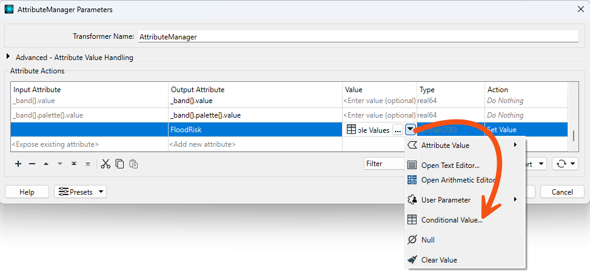
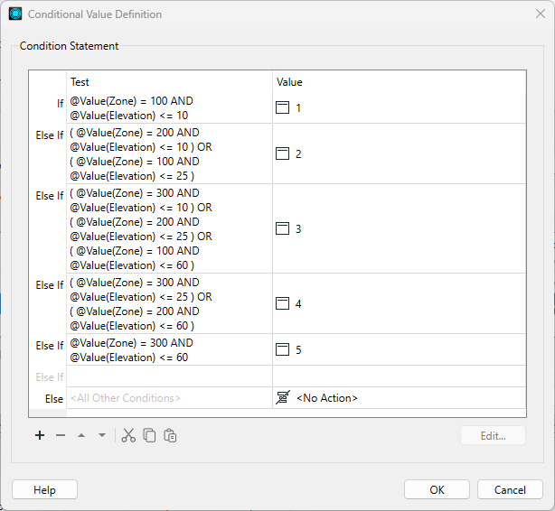
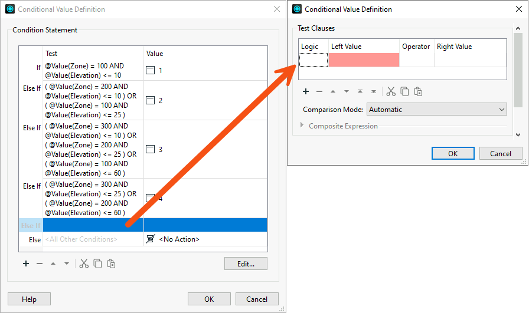
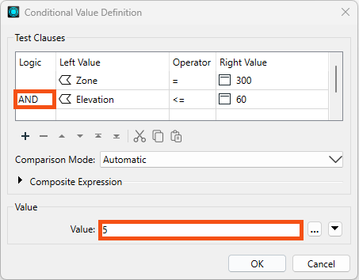
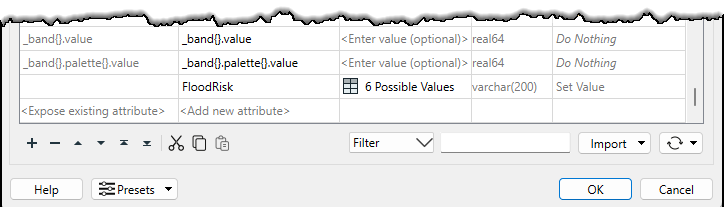
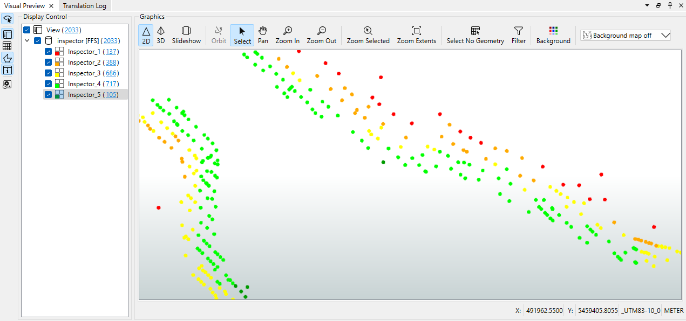

After completing this lesson, you’ll be able to:
Jennifer is working on a workspace to calculate the tsunami flood risk for all addresses in the city. The flood risk score combines closeness to the shoreline and elevation above sea level. It is on a scale from one to five (1-5) and is calculated using this table:
| Elevation (meters above sea level) | ||||
| 0-10m | 10-25m | 25-60m | ||
| Distance from Shoreline (meters) | 100m | 1 | 2 | 3 |
| 200m | 2 | 3 | 4 | |
| 300m | 3 | 4 | 5 | |
She has built the workspace so that each address has an elevation and distance from the shoreline. Now, she wants to use conditional values to calculate the flood risk score.
FloodRisk attribute.
FloodRisk, but we need to finish it.FloodRisk attribute, click the drop-down arrow and choose Conditional Value.

FloodRisk = 1 (the highest) through FloodRisk = 4 (the second-lowest). According to the table of calculations, FloodRisk = 1 can occur only where Zone = 100 AND Elevation <= 10. The Test uses the Boolean operator AND to ensure both conditions are true.
FloodRisk = 5.



We would like to separate the data into layers for easier inspection. We can accomplish this with an Inspector transformer with a Group By setting.
FloodRisk attribute.
Congratulations. You have successfully used conditional values to filter and map features with a single transformer.